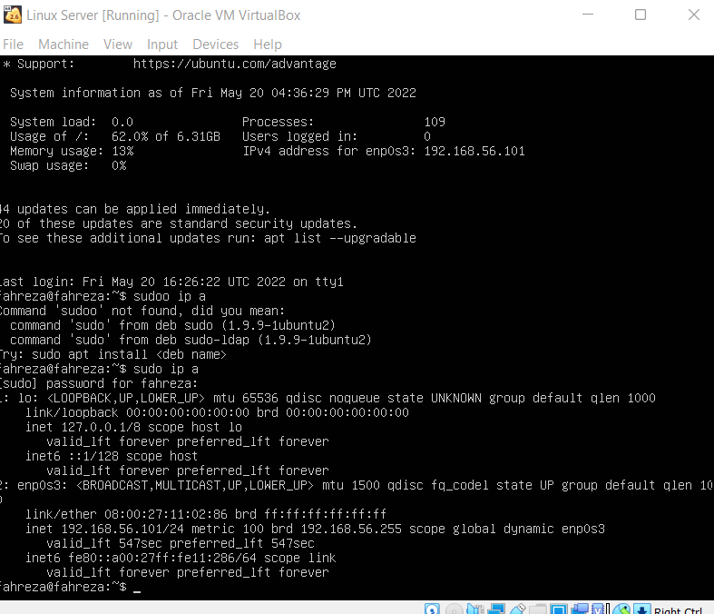
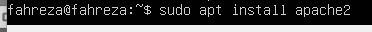
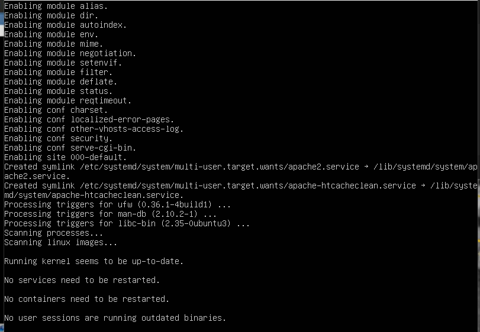
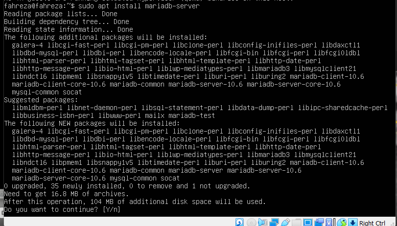
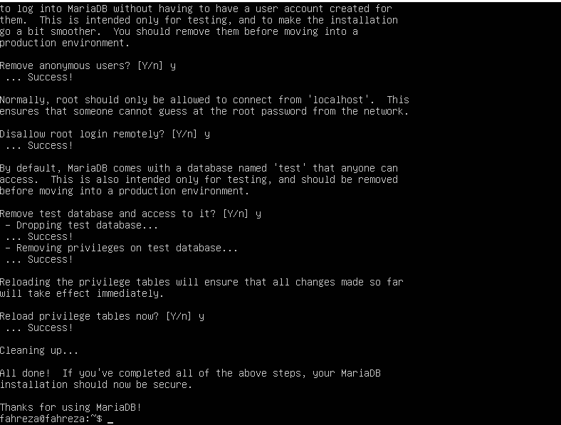
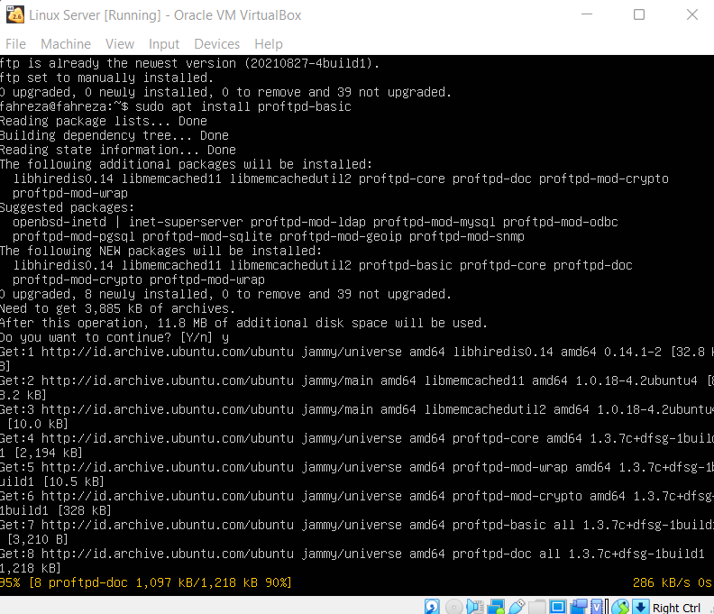

Achmad Fahreza Alif Pahlevi
200605110098
Praktikum Jaringan Komputer DInstalasi Web Server
1. Mengecek IP kita dahulu
Disini kita akan mengecek ip kita dulu dengan cara mengetikkan perintah sudo ip a
2. Menginstall Apache di Linux Server

Disini kita akan menginstall apache sebagai web server nantinya, dengan menggunakan command sudo apt install apache2
Instalasi PHP
1. Menginstall PHP

Disini kita akan menginstall php versi php-mysql dulu dengan cara mengetikkan perintah sudo apt install php-mysql
Instalasi & Konfigurasi Database Server (MariaDB)
1. Menginstall maria DB
Disini kita akan menginstall mariaDB versi Server dulu dengan cara mengetikkan perintah sudo apt install mariadb-server
2. Konfigurasi maria DB


Disini kita akan melakukan konfigurasi di database, sesuaikan dengan kebutuhan kalian. mulai dari password sampai test database
Instalasi FTP Server
1. Menginstall FTP - Proftp
Disini kita akan menginstall ftp versi prostp-basic dulu dengan cara mengetikkan perintah sudo apt install proftpd-basic
Pembuatan User dengan Home Direktori di Server
1. Membuat user baru di direktori Server

Disini kita membuat sebuah user baru dan menginput password baru di direktori yang ada di server (/var/www/html/) dengan perintah sudo useradd -d (direktori) namauser
Upload File Website ke server melalui FTP
1. Memberi permission di server

Disini kita memberi permission agar kita bisa mengupload file ke server dengan command sudo chmod -R 777 (namafolder), pastikan kita sudah cd ke satu folder sebelumnya
2. Memindah File Website ke server dengan FileZilla

Disini kita menggunakan filzilla untuk upload file ke server, saya memasukkan ip yang kita cek tadi, kemudian username dan password user di direktori server kita, kemudian drag and drop file website ke server